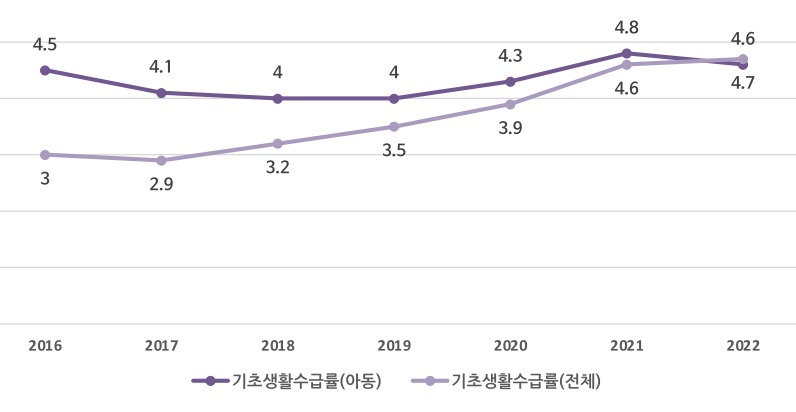
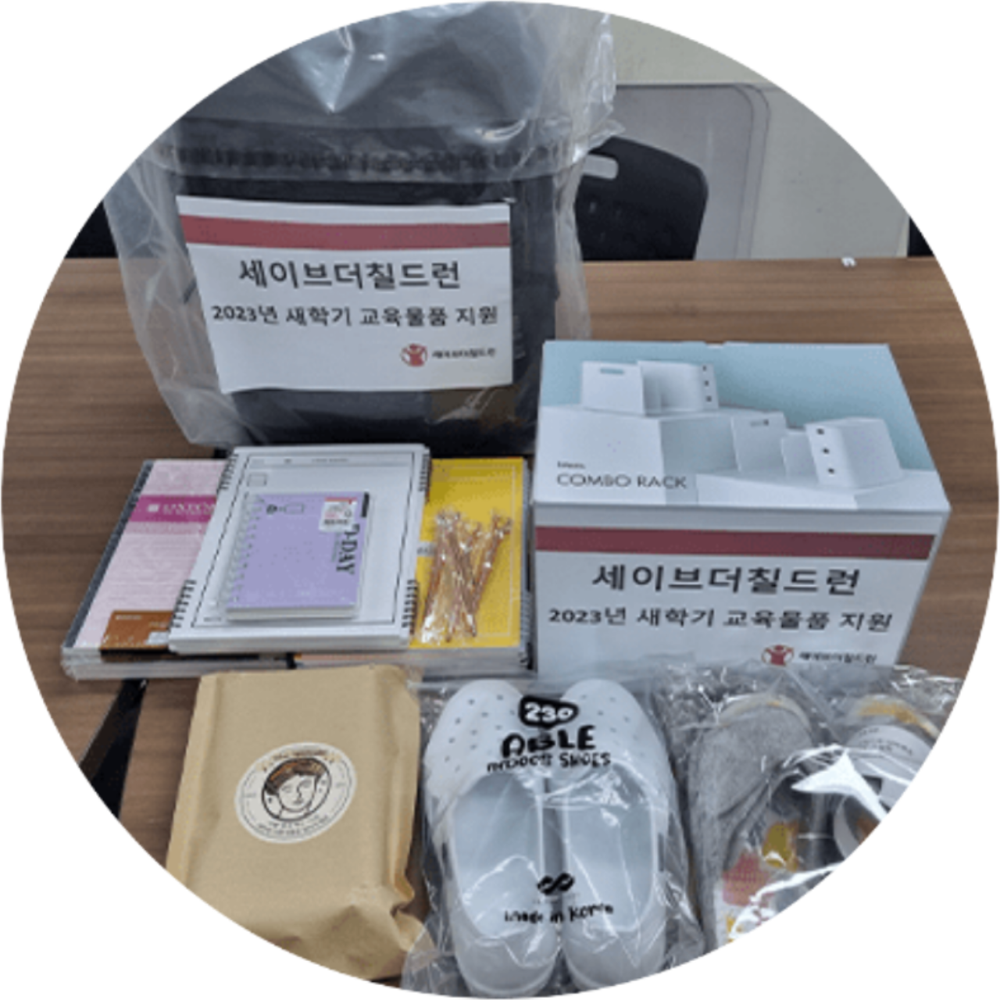
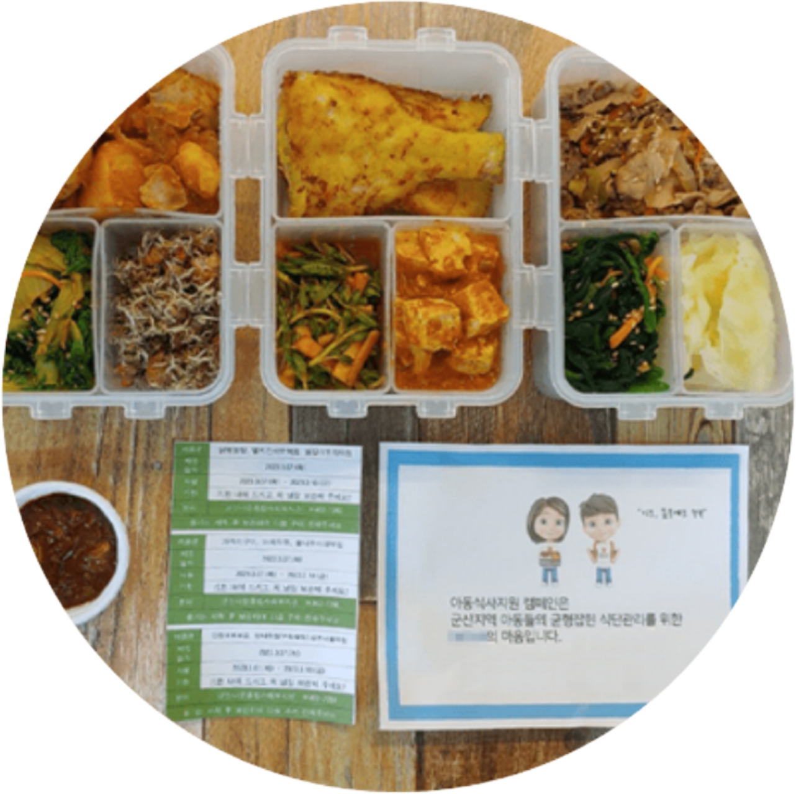
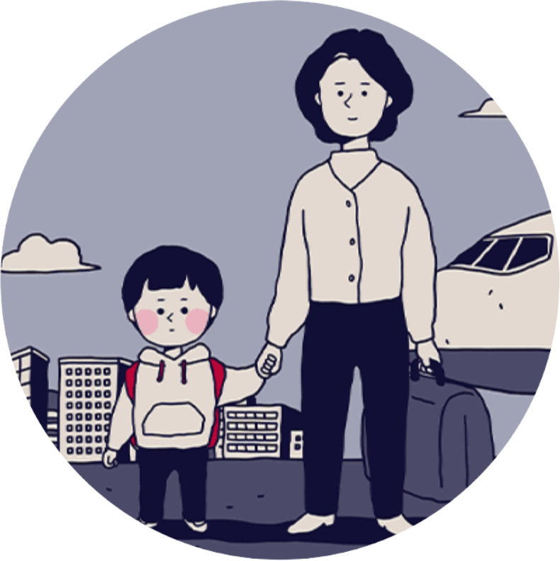
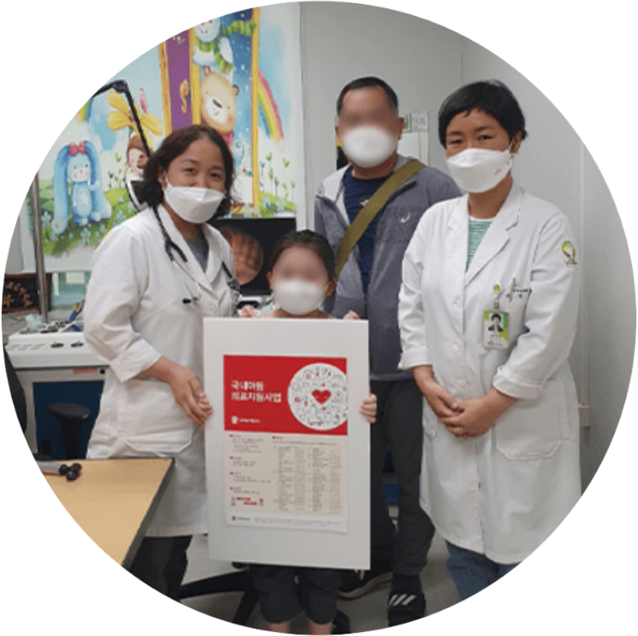

빈곤아동 현황
-
아동빈곤율
아동빈곤율 단위: % 연도 2016 2017 2018 2019 2020 시장소득(중위 50%) 15.5 14.5 13.1 12.1 12.9 경상소득(중위 50%) 15.2 13.9 12.3 10.8 10.5 가처분소득(중위 50%) 15.2 14.2 12.3 10.6 9.8 평균 아동 빈곤율 15.3 14.2 12.6 11.2 11.1 -
국민기초생활수급아동 현황
 아동 기초생활보장수급률 연도별 현황
- 국민기초 생활수급 아동 현황은 2016부터 2022년까지 소폭 증감 추세를 보이며 4%대를 유지하고 있습니다.
- 2022년 전체 아동 인구 대비 기초생활보장수급아동 비율은 4.6%이며, 전체 인구 대비 기초생활보장수급자 비율은 4.7%로 나타납니다.
➕ 다른 아동관련 주요통계를 보고 싶다면?
아동주요통계위기아동지원사업
-
저소득가정아동 지원
 열악한 환경이 아동에게 미치는 영향을 최소화할 수 있게 아동에게 필요한 물품을 지원합니다. -
아동 식사 지원
 결식위기아동에게 건강하고 균형 잡힌 식사를 제공하고, 위생적인 환경을 조성하여 식사의 권리를 보장합니다. -
난민 아동 지원
 복지의 사각지대에 놓여있는 난민 아동에게 양육비와 보육비를 지원하여 아동을 건강하게 양육할 수 있도록 합니다. -
보건 의료 지원
 질병의 위험에 노출된 아이들을 위해 전국 각지의 전문 의료인들과 파트너쉽을 맺어 아동의 치료받을 권리를 보호합니다.
➕ 지원사업 결과보고
여러분들의 후원으로 인해 변화된 아이들의 이야기를 확인하세요.
더 많은 달라진 아이들의 생활 확인하기위기아동지원사업에 후원해주세요.
저소득가정 아이들이 긴급한 생활난, 질병과 어려움에서 벗어나 기본적인 삶을 누릴 수 있도록 지금, 도와주세요.
후원 신청 페이지 👇🏻
후원하러 가기
📌 위기아동지원사업에 관해 의견을 남겨주세요. 추후 더 나은 사업을 위한 참고에 쓰입니다.